判斷文
判斷文
你需要的是上課、按摩，還是先做一次 AI 體態檢測？
肩頸緊、姿勢不適時，先判斷應該上課、按摩，還是做AI體態檢測。用症狀與目標分流，避免花時間做錯選擇。
 分流文
分流文
明明沒有很痛，為什麼身體還是怪怪的？這 5 種狀況適合先做體態檢測
沒有明顯疼痛，但站坐不舒服、左右不對稱或動作代償？整理5種適合先做AI體態檢測的狀況，幫你判斷是否該預約。
 肩頸
肩頸
肩頸反覆緊，不一定是肩頸的問題：什麼時候不該再一直拉？
肩頸反覆緊，拉伸當下有效卻很快復發？先判斷問題是否可能不只在肩頸，哪些情況應先做AI體態檢測。
 代償
代償
越想把姿勢撐好，越累？你可能在用補償代替調整
越想站直、坐正，身體反而更累？了解「撐姿勢」與真正調整的差別，並判斷何時適合先做AI體態檢測。
 體態
體態
看起來都是「姿勢不好」：圓肩、駝背、高低肩，為什麼不能用同一套方法處理？
圓肩、駝背、高低肩看起來都像姿勢不好，但成因與優先順序可能不同。用分流方式理解差異，避免套用同一套方法。
 決策文
決策文
哪些人不必急著做 AI 體態檢測？先用這份判斷表決定
AI體態檢測適合哪些人？哪些情況可先觀察或尋求醫療協助？用一份判斷表確認你是否適合現在預約。
 判斷文
判斷文
AI 體態檢測報告怎麼看？做完之後老師會跟你講什麼
檢測做完會拿到什麼？角度數字代表什麼意思、老師會怎麼解讀？帶你先了解檢測做完之後的流程，預約前心裡有底。
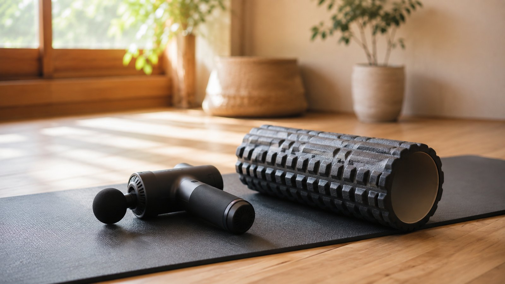
判斷文按摩槍、筋膜刀有用嗎？跟壁繩瑜伽差在哪
按摩槍、筋膜刀、滾筒這些自我放鬆工具到底有沒有用？用「放鬆」和「調整」兩個層次，幫你搞懂該怎麼搭配使用。
 決策文
決策文
40 歲、50 歲才想調整體態，會不會太晚了？
這個年紀才開始還有用嗎？從身體改變的原理談起，說明為什麼調整體態幾乎沒有太晚，以及中年開始反而有的優勢。
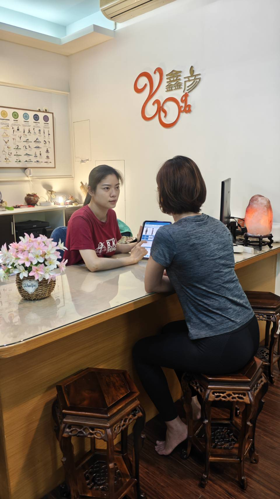
流程文第一次做 AI 體態檢測會發生什麼事？現場流程一次看懂
還沒做過 AI 體態檢測，不確定現場會發生什麼事？從到店、拍攝到老師當面解讀，把實際流程一次講清楚。
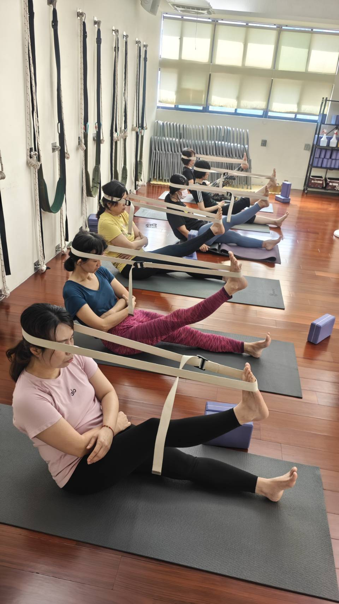
判讀文AI體態檢測量出來的是數字，老師要看的是「你在哪裡撐」
AI體態檢測不是量出一個角度數字就結束。真正的判讀，是老師接下來問的問題：你看到的是歪、是緊，但身體真正在做的，是靠哪裡撐住。
 坐一整天肩膀就往前掉？先搞懂「上交叉症候群」圓肩駝背 · 閱讀約 4 分鐘 →
坐一整天肩膀就往前掉？先搞懂「上交叉症候群」圓肩駝背 · 閱讀約 4 分鐘 →
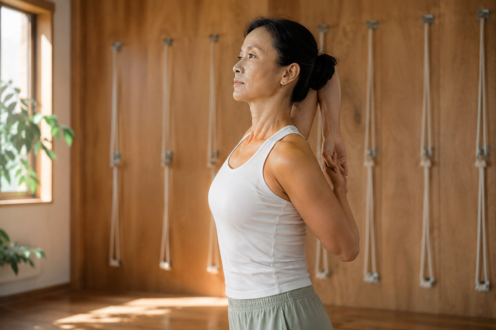
圓肩自我檢測：3 個動作看你駝多少圓肩駝背 · 閱讀約 4 分鐘 → 為什麼「抬頭挺胸」撐不過三分鐘？圓肩駝背 · 閱讀約 4 分鐘 →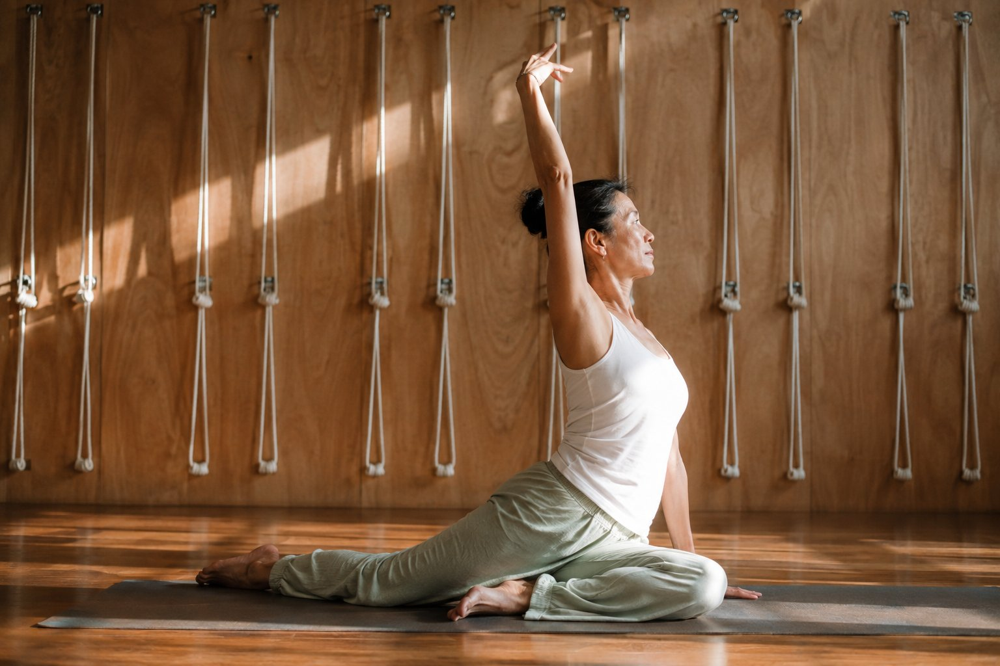
駝背會讓你變矮嗎？把脊椎「拉回來」的真相圓肩駝背 · 閱讀約 4 分鐘 → 低頭族的「富貴包」是怎麼長出來的？圓肩駝背 · 閱讀約 4 分鐘 →
低頭族的「富貴包」是怎麼長出來的？圓肩駝背 · 閱讀約 4 分鐘 →
 圓肩駝背，先鬆哪裡、先練哪裡？圓肩駝背 · 閱讀約 5 分鐘 →
圓肩駝背，先鬆哪裡、先練哪裡？圓肩駝背 · 閱讀約 5 分鐘 →
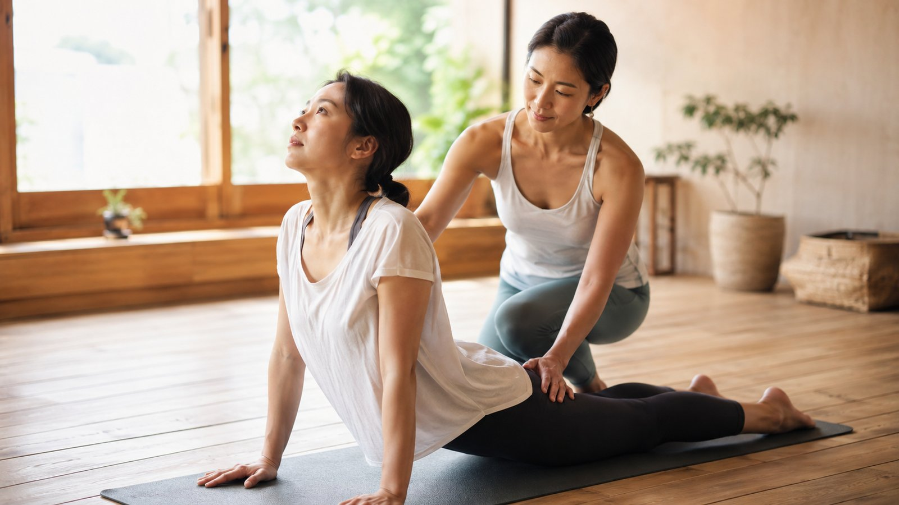
練了一陣子卻卡關了？姿勢調整的停滯期怎麼過圓肩駝背 · 閱讀約 5 分鐘 →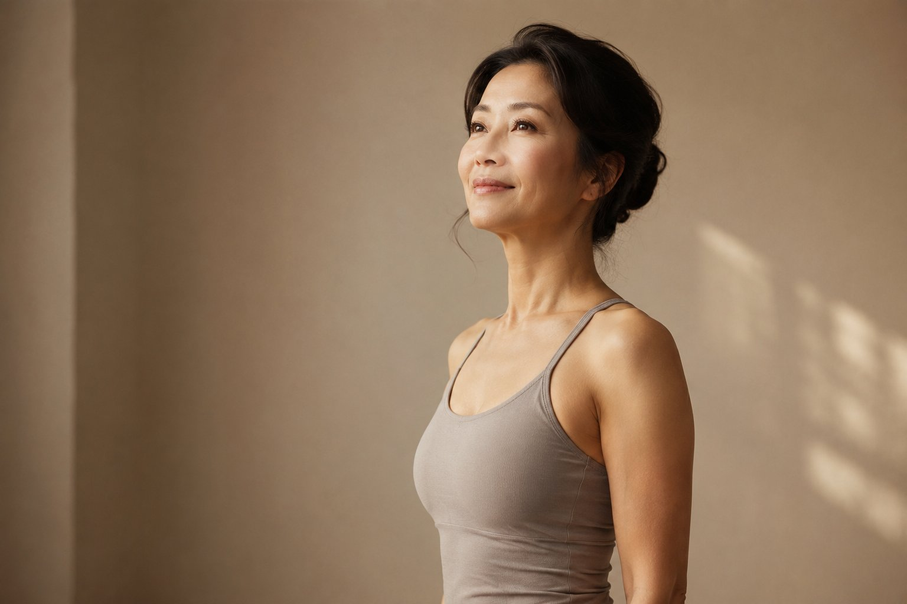
體態如何悄悄讓你「顯老」？氣色與自信的關係圓肩駝背 · 閱讀約 5 分鐘 → 為什麼照片、視訊裡的自己特別駝？圓肩駝背 · 閱讀約 4 分鐘 → 手臂放下來就鬆垮？蝴蝶袖可能跟姿勢有關，不只是脂肪圓肩駝背 · 閱讀約 7 分鐘 → 為什麼你按摩完，隔天又緊回去了？肩頸緊繃 · 閱讀約 4 分鐘 →
為什麼你按摩完，隔天又緊回去了？肩頸緊繃 · 閱讀約 4 分鐘 →
 電腦族的脖子前傾，一天可以還原一點點嗎？肩頸緊繃 · 閱讀約 4 分鐘 →
落枕、緊到轉不了頭，先別急著硬扳肩頸緊繃 · 閱讀約 4 分鐘 →
電腦族的脖子前傾，一天可以還原一點點嗎？肩頸緊繃 · 閱讀約 4 分鐘 →
落枕、緊到轉不了頭，先別急著硬扳肩頸緊繃 · 閱讀約 4 分鐘 →
 在辦公室就能做的 3 個肩頸放鬆，不用換衣服肩頸緊繃 · 閱讀約 4 分鐘 →
在辦公室就能做的 3 個肩頸放鬆，不用換衣服肩頸緊繃 · 閱讀約 4 分鐘 →
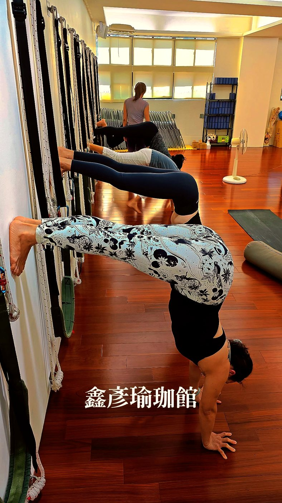
頭痛、眼睛脹，有時候是脖子的問題肩頸緊繃 · 閱讀約 4 分鐘 → 拉筋拉越大力越有效？當心過度伸展的反效果肩頸緊繃 · 閱讀約 5 分鐘 →
調整好的體態，怎麼避免「沒多久又打回原形」？肩頸緊繃 · 閱讀約 5 分鐘 →
拉筋拉越大力越有效？當心過度伸展的反效果肩頸緊繃 · 閱讀約 5 分鐘 →
調整好的體態，怎麼避免「沒多久又打回原形」？肩頸緊繃 · 閱讀約 5 分鐘 →
 天冷肩膀就往上縮？冬天肩頸更緊的原因與對策肩頸緊繃 · 閱讀約 4 分鐘 →
肩膀卡卡、某個角度就是抬不高，是五十肩嗎？肩頸緊繃 · 閱讀約 7 分鐘 →
下巴緊繃、有喀喀聲，是顳顎關節出問題嗎？肩頸緊繃 · 閱讀約 10 分鐘 →
天冷肩膀就往上縮？冬天肩頸更緊的原因與對策肩頸緊繃 · 閱讀約 4 分鐘 →
肩膀卡卡、某個角度就是抬不高，是五十肩嗎？肩頸緊繃 · 閱讀約 7 分鐘 →
下巴緊繃、有喀喀聲，是顳顎關節出問題嗎？肩頸緊繃 · 閱讀約 10 分鐘 →
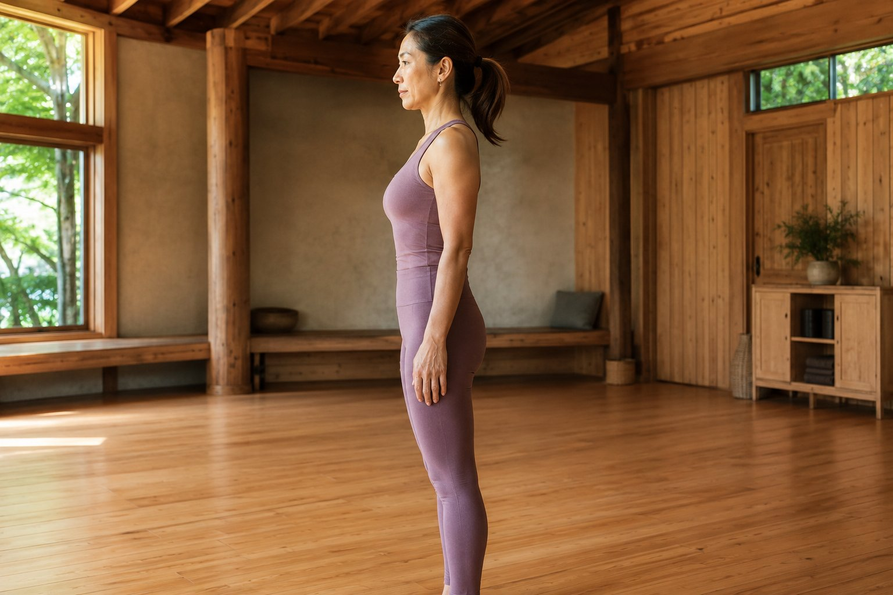
骨盆前傾＝小腹凸？先看懂再收骨盆・下半身 · 閱讀約 4 分鐘 →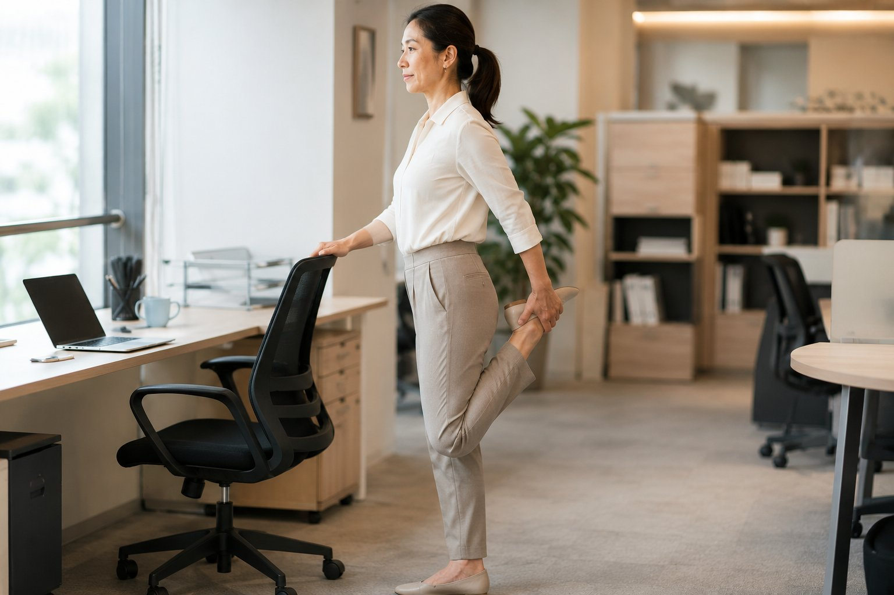
久坐讓屁股「失憶」，怎麼把它叫醒骨盆・下半身 · 閱讀約 4 分鐘 →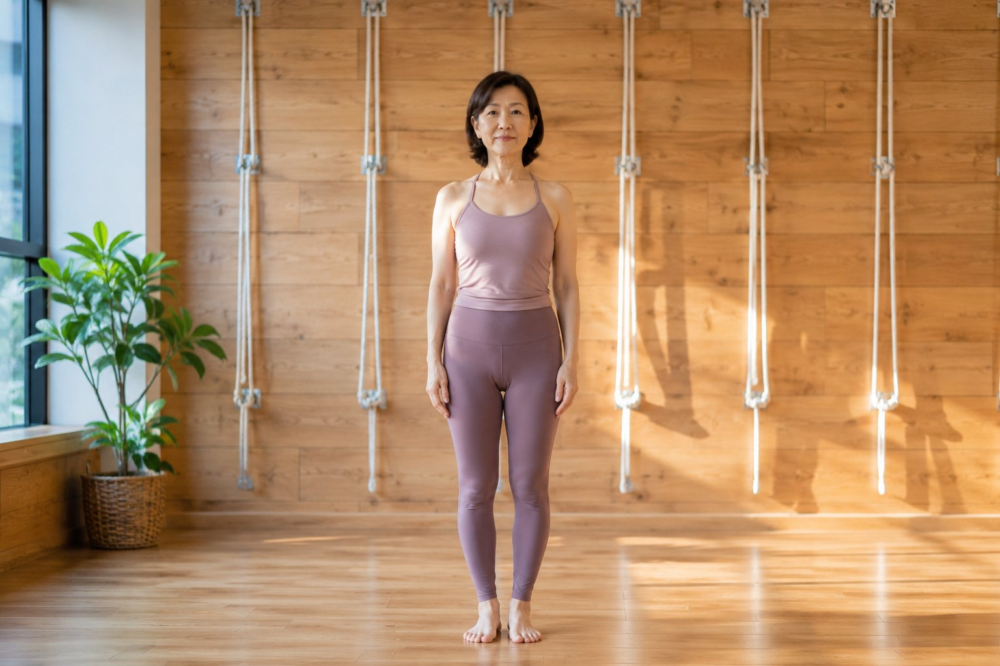
高低肩、長短腳，是骨盆在歪嗎？骨盆・下半身 · 閱讀約 4 分鐘 → 膝蓋卡卡，問題可能在髖骨盆・下半身 · 閱讀約 4 分鐘 →
膝蓋卡卡，問題可能在髖骨盆・下半身 · 閱讀約 4 分鐘 →
 腰痠，是核心太弱還是太緊？骨盆・下半身 · 閱讀約 5 分鐘 →
產後、更年期的體態變化，跟一般肩頸緊有什麼不同？骨盆・下半身 · 閱讀約 5 分鐘 →
走路也看得出體態？從步態讀懂身體骨盆・下半身 · 閱讀約 5 分鐘 →
腰痠，是核心太弱還是太緊？骨盆・下半身 · 閱讀約 5 分鐘 →
產後、更年期的體態變化，跟一般肩頸緊有什麼不同？骨盆・下半身 · 閱讀約 5 分鐘 →
走路也看得出體態？從步態讀懂身體骨盆・下半身 · 閱讀約 5 分鐘 →
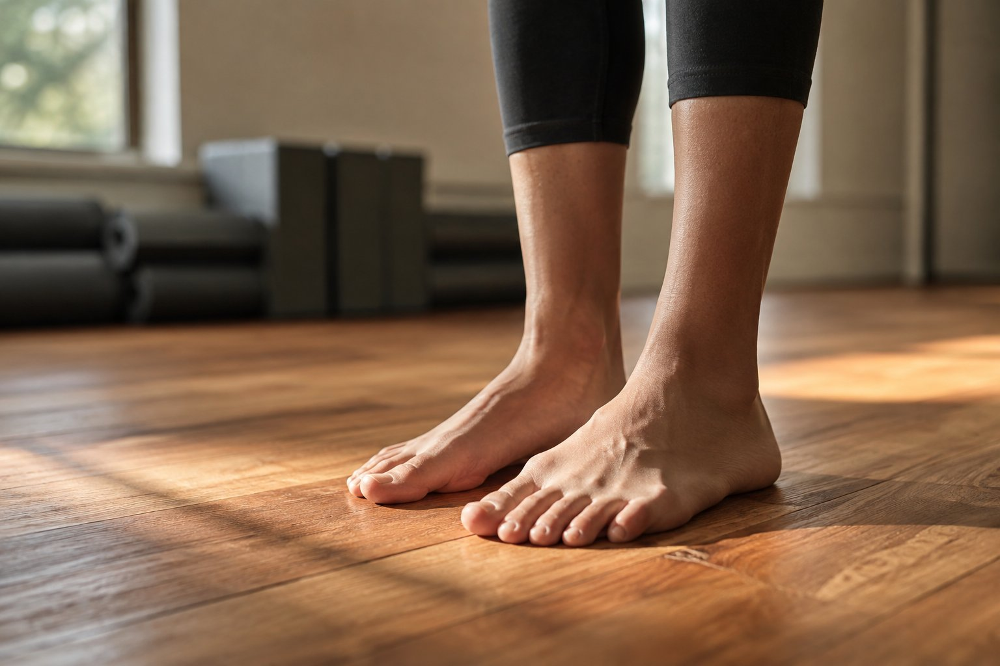
腳是體態的地基：鞋子和足弓牽動全身骨盆・下半身 · 閱讀約 5 分鐘 → 買菜、抱孫、搬東西：中年後怎麼省力用身體骨盆・下半身 · 閱讀約 5 分鐘 → 站久了腰就痠？久站族的體態自救骨盆・下半身 · 閱讀約 5 分鐘 →
中年後站不太穩？談身體的平衡感骨盆・下半身 · 閱讀約 5 分鐘 →
彎腰做家事就腰痠？從「怎麼彎」開始改骨盆・下半身 · 閱讀約 5 分鐘 →
站久了腰就痠？久站族的體態自救骨盆・下半身 · 閱讀約 5 分鐘 →
中年後站不太穩？談身體的平衡感骨盆・下半身 · 閱讀約 5 分鐘 →
彎腰做家事就腰痠？從「怎麼彎」開始改骨盆・下半身 · 閱讀約 5 分鐘 →
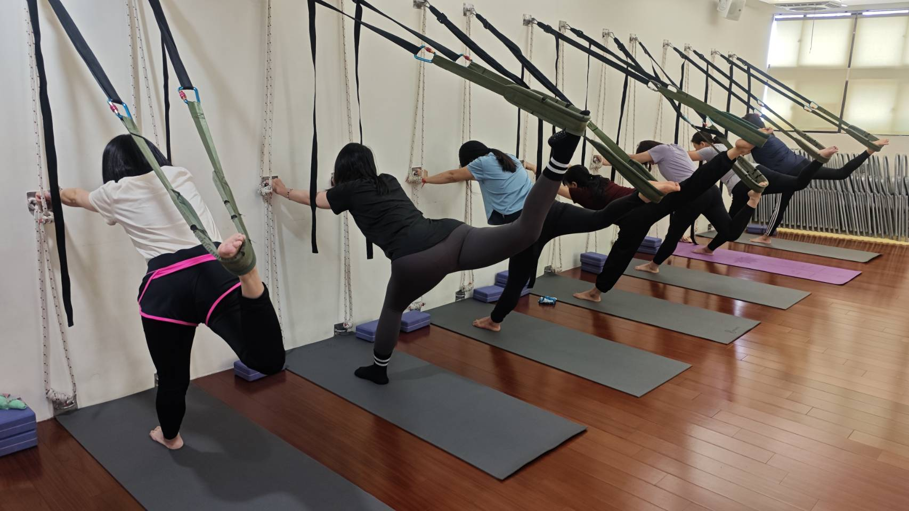
骨盆前傾，壁繩瑜伽怎麼練？跟核心訓練差在哪骨盆・下半身 · 閱讀約 7 分鐘 →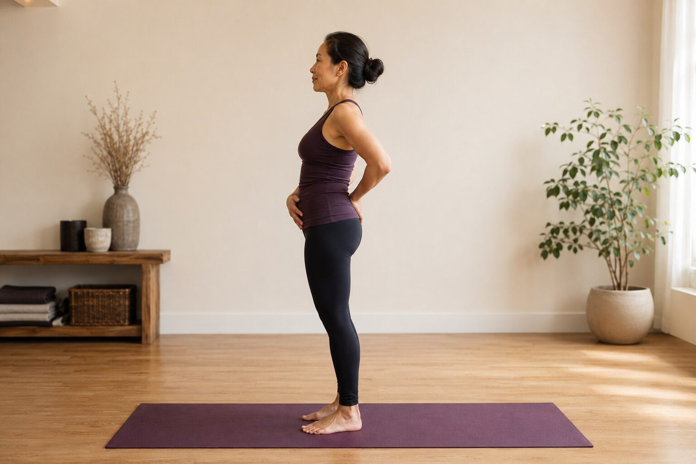
打噴嚏、大笑會漏尿？先搞懂骨盆底肌是怎麼回事骨盆・下半身 · 閱讀約 7 分鐘 → 閃到腰、腳踝扭傷後，怎麼安全重新開始活動？骨盆・下半身 · 閱讀約 9 分鐘 → 一天坐 8 小時，身體到底發生了什麼事久坐生活 · 閱讀約 5 分鐘 → 選對椅子，比多做十個伸展還有用久坐生活 · 閱讀約 4 分鐘 →
手機怎麼拿，脖子才不會受苦久坐生活 · 閱讀約 4 分鐘 →
選對椅子，比多做十個伸展還有用久坐生活 · 閱讀約 4 分鐘 →
手機怎麼拿，脖子才不會受苦久坐生活 · 閱讀約 4 分鐘 →
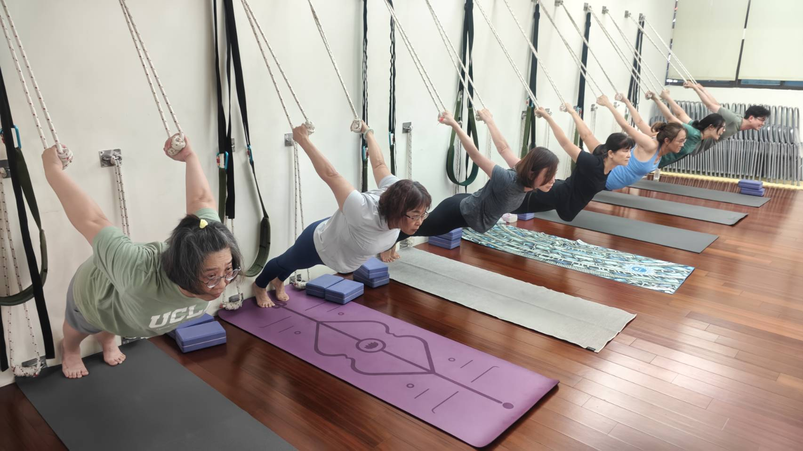
通勤族在車上就能做的姿勢微調久坐生活 · 閱讀約 4 分鐘 →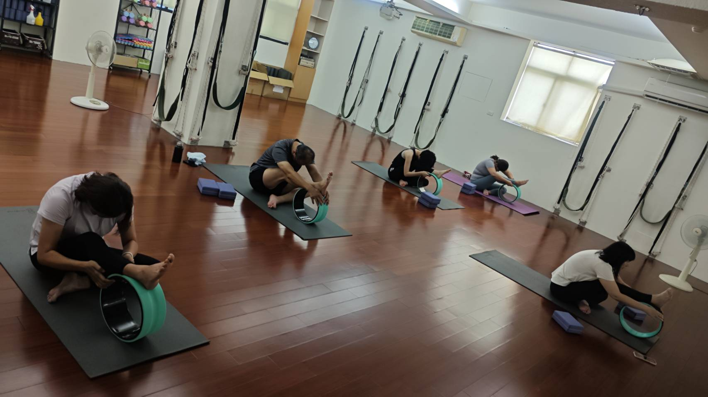
每坐 40 分鐘，站起來做這一件事久坐生活 · 閱讀約 4 分鐘 → 書包、低頭讀書、滑手機：孩子的體態什麼時候該注意？久坐生活 · 閱讀約 5 分鐘 →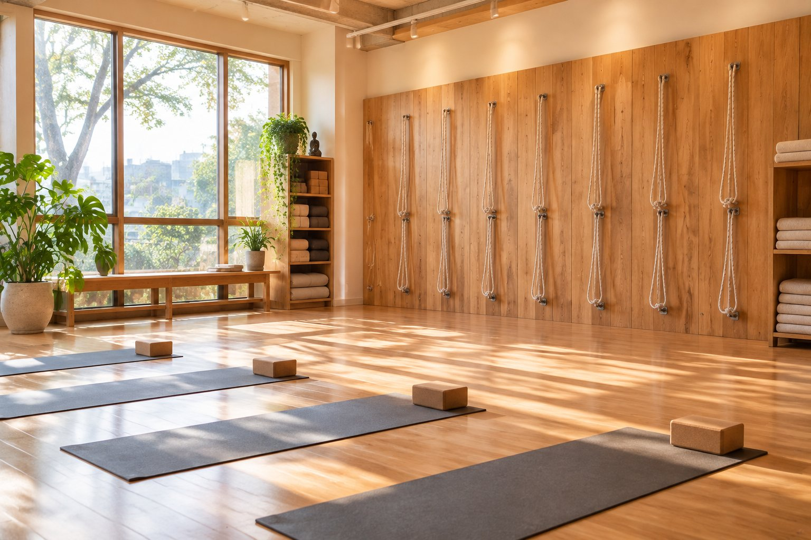
壁繩到底是什麼？第一次上課會做什麼？壁繩入門 · 閱讀約 5 分鐘 →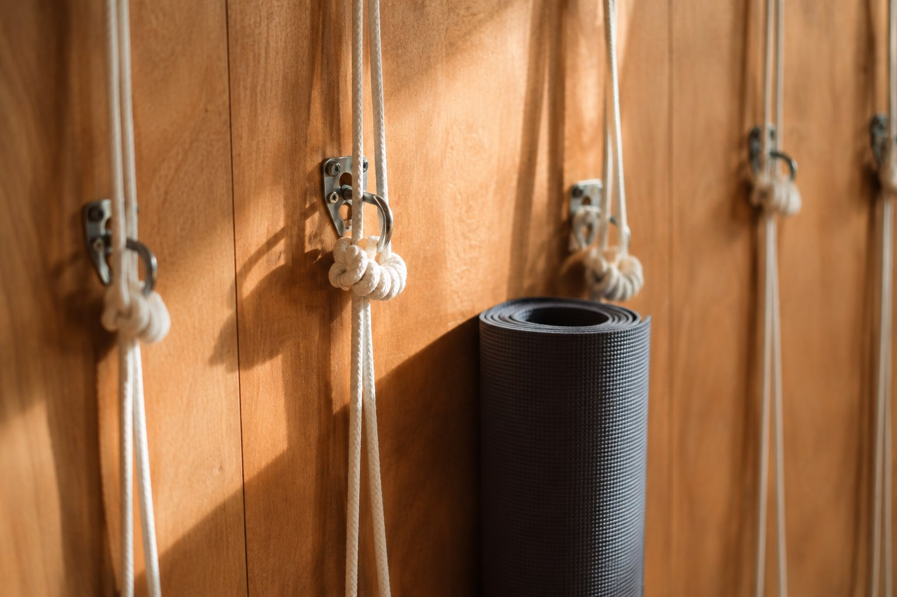
壁繩瑜伽 vs 一般瑜伽，差在哪？壁繩入門 · 閱讀約 4 分鐘 →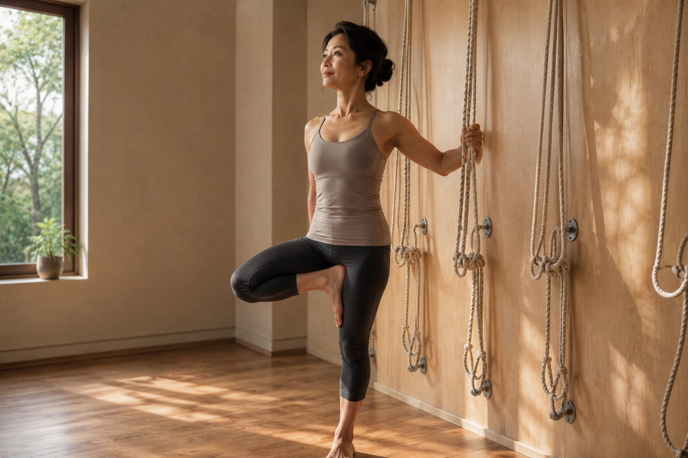
身體很硬、沒基礎，為什麼反而更適合壁繩壁繩入門 · 閱讀約 4 分鐘 → 中高齡練壁繩，安全嗎？要注意什麼壁繩入門 · 閱讀約 5 分鐘 →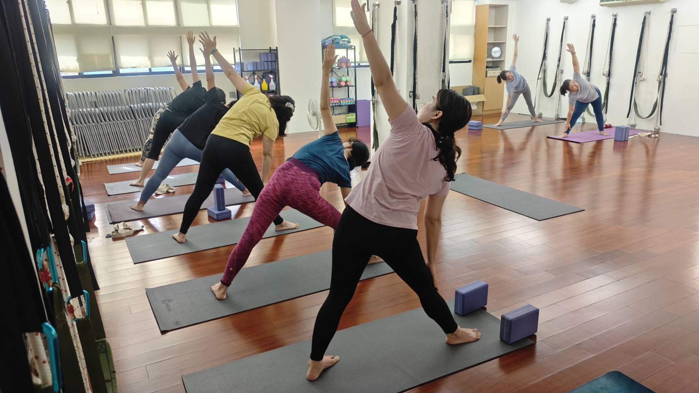
第一次上課要穿什麼、帶什麼？新手須知壁繩入門 · 閱讀約 4 分鐘 → 壁繩瑜伽練多久，體態會有感？一份誠實的時間表壁繩入門 · 閱讀約 5 分鐘 →
壁繩瑜伽練多久，體態會有感？一份誠實的時間表壁繩入門 · 閱讀約 5 分鐘 →
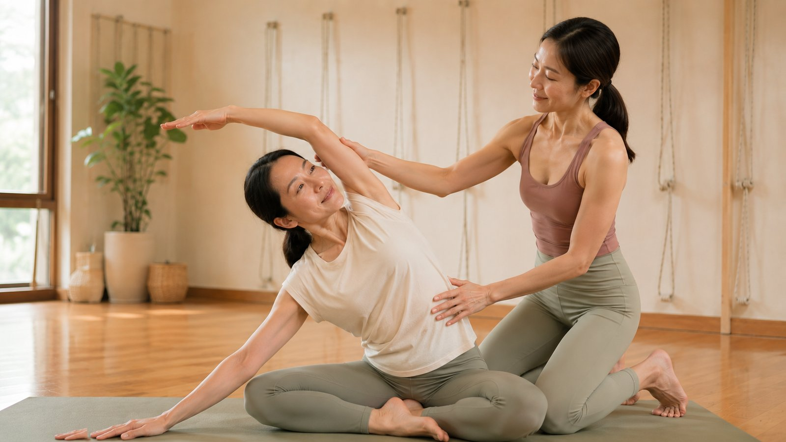
決定開始調整體態後，接下來三個月大概會經歷什麼？壁繩入門 · 閱讀約 6 分鐘 →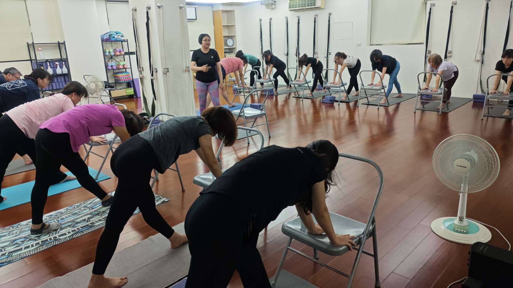
團課、一對一、零基礎入門班，第一次來該選哪一種？壁繩入門 · 閱讀約 7 分鐘 →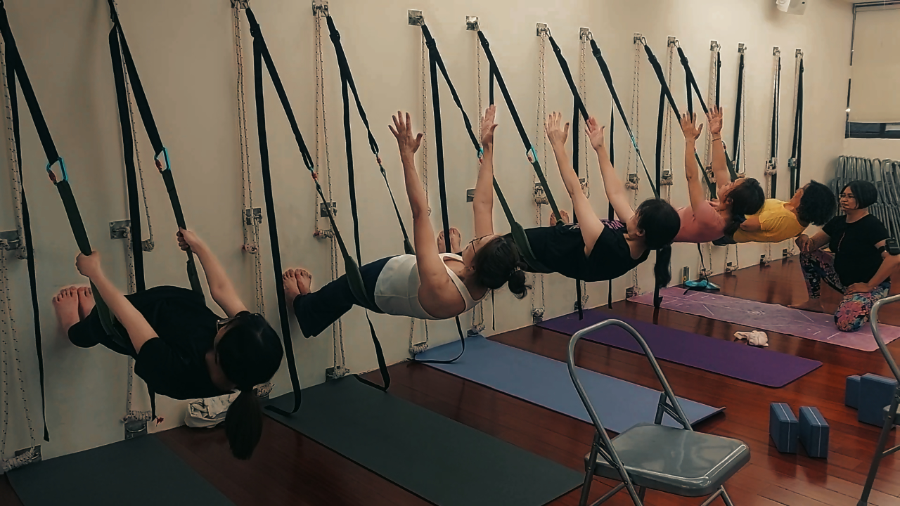
這幾種期待，壁繩瑜伽可能沒辦法馬上滿足你壁繩入門 · 閱讀約 6 分鐘 →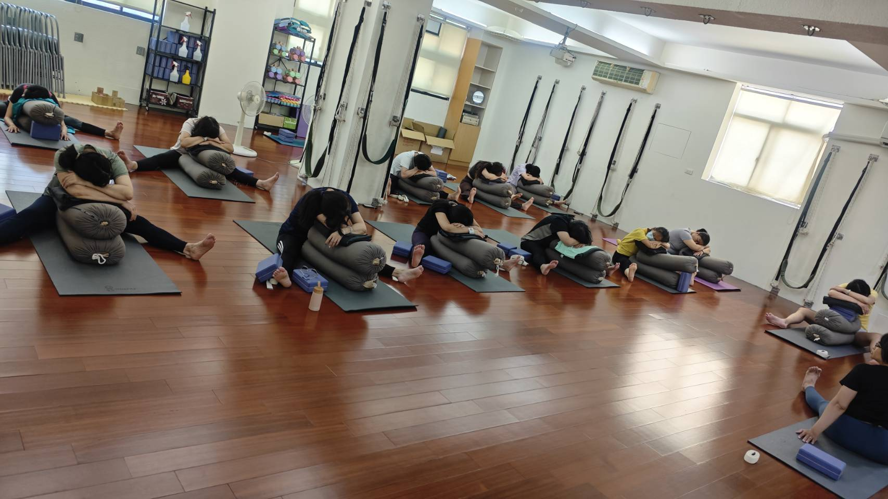
睡前 5 分鐘，讓拱起來的背慢慢躺平睡眠・放鬆 · 閱讀約 4 分鐘 →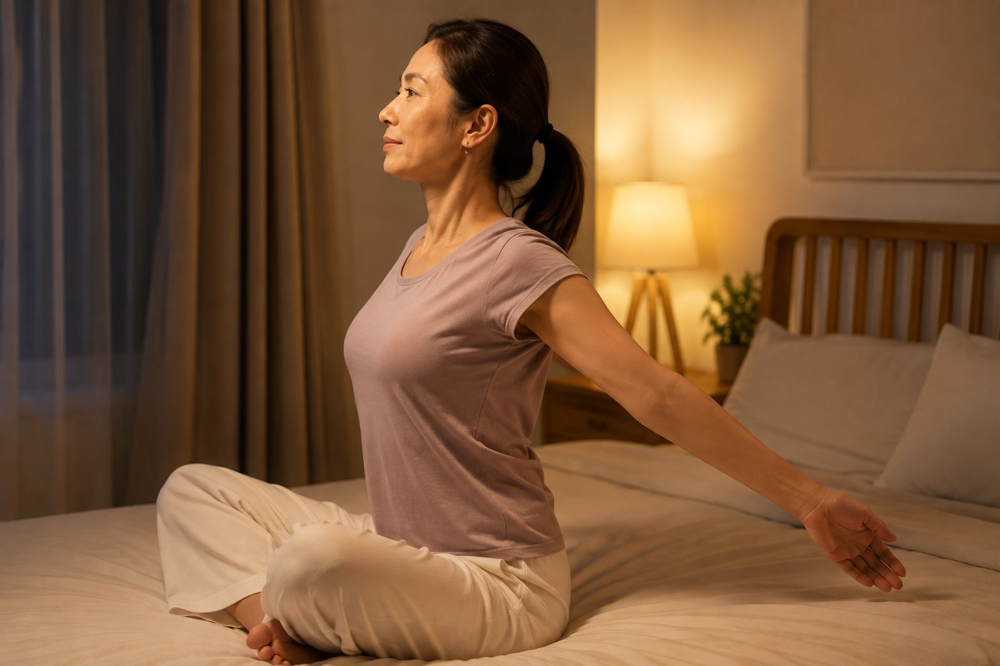
越累越睡不好？先把胸口打開睡眠・放鬆 · 閱讀約 4 分鐘 →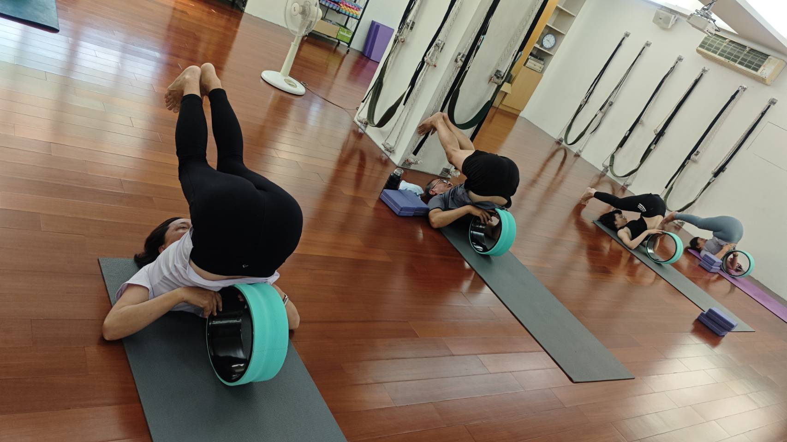
呼吸練對了，肩膀自己會鬆睡眠・放鬆 · 閱讀約 4 分鐘 →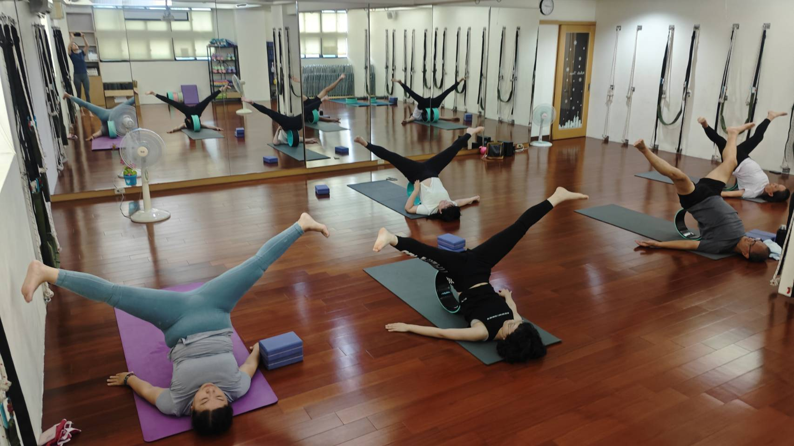
壓力大、生理期時，怎麼溫和地動一動睡眠・放鬆 · 閱讀約 4 分鐘 → 睡姿和枕頭，可能正在影響你的肩頸睡眠・放鬆 · 閱讀約 5 分鐘 → 感冒臥床好幾天，起來全身僵硬痠痛？怎麼慢慢找回節奏睡眠・放鬆 · 閱讀約 8 分鐘 →